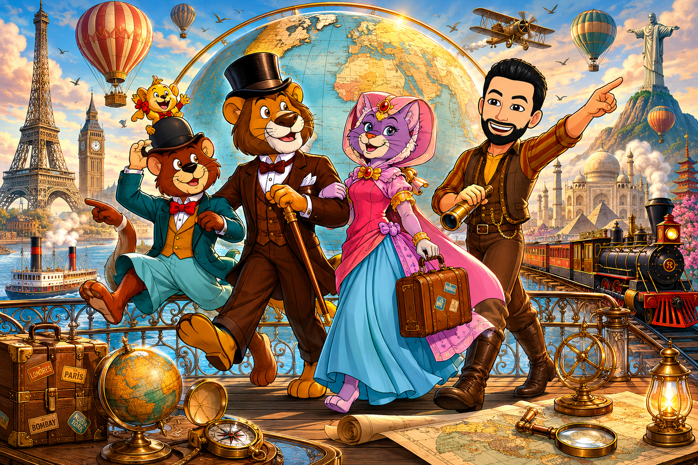

¡Acepta la apuesta, viajero!
Londres, 1872. El caballero inglés Willy Fog ha apostado la mitad de su fortuna a que es capaz de dar la vuelta al mundo en exactamente 80 días. Rigodón, Tico y la princesa Romy lo acompañan, pero las trampas de Transfer os acechan en cada continente.
Para ayudarles a avanzar, deberás resolver 6 problemas de proporcionalidad directa e inversa. ¡Presta mucha atención! Las pruebas están mezcladas y tendrás que deducir qué tipo de regla de tres aplicar en cada lugar del mundo. Al final, sumarás las respuestas de cada pantalla para obtener la combinación del candado del Reform Club.
Elige la duración del viaje:
Autor: Joaquín Candañedo.